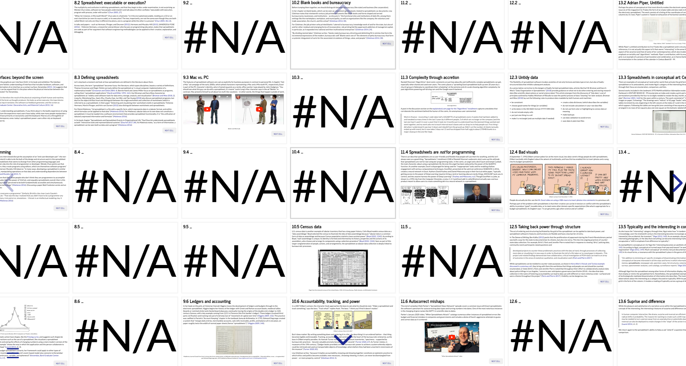
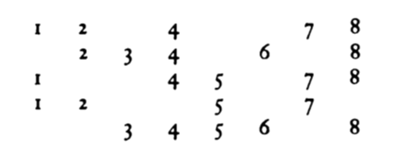

Introduction to Spreadsheets!
Read the introduction here, or go back to Spreadsheets! to experience the project.
1 Problem statement: Bedazzling or smelly? Evocations of good and bad spreadsheets
In “Spreadsheets,” installment 2180 of Randall Munroe’s webcomic xkcd, an angel and a devil taunt and tempt Cueball, the main character of the comic, about using a spreadsheet for a computer programming task. By the end, the angel has been seduced by the power of the QUERY() function.

Munroe’s comic takes us through the full arc of feelings about spreadsheets, from disparagement to bedazzlement, and the humorous exchange distills their position of being at once denigrated and heralded. Published in April of 2019, its contemporaneity shows that spreadsheets remain pertinent cultural topic.
Why have spreadsheets come to permeate our work and personal lives? What is it about them that makes us judge them as good or bad, boring or interesting? What do spreadsheet uses that break ideas of appropriate or good design reveal about who has power, who (or what) data is for, and the relationship between constraints and creativity?
Spreadsheets are ubiquitous in office cultures across various disciplines – from finance to cultural heritage – and they are a feature in the daily life of many white collar/knowledge workers. People also use spreadsheets in their personal lives and in activist contexts. Often invoked as the first “killer app” and credited with launching Apple and the personal computing boom of the 1980s, spreadsheets encapsulate a shift in the history of computing from rarified research and business tool to ubiquitous presence in the lives of those who may not be computer experts.
As they do in Munroe’s comic, spreadsheets often hold two extremes at once: they are both highly visual and thought of as containers for transporting and holding data; they are seen as intuitive, easy to use out-of-the-box and transparent, yet they are also highly complex and their deeper functions are obfuscated; they are malleable and can be used to do virtually anything, yet they are simplistic and limited and there is a perception that are often better tools to accomplish the task at hand; anyone can use them and become a programmer without knowing it, but the code they produce might be “smelly” and poorly designed; they are rigidly gridded, yet flexible, merged cells or formatting obscuring the gridlines; they are frequently used to create and view data, yet they are seen to produce “bad” data if they are not designed or used “correctly.” As María Matienzo puts it, “as a form of information, a spreadsheet can be seen both as data and a program” (Matienzo 2016). At the same time, they are also documents. They are thus both material and ephemeral, thing and process.
Spreadsheets may be understood to be for data, but as numerous examples show, spreadsheet makers have long incorporated visual elements into their designs, or intended for them to be printed and shown to other people. There is thus a tension in spreadsheets between visuals and the underlying data, between the visible and the invisible, between calculation or enumeration and communication.
Regardless of feelings negative or positive, it is clear that spreadsheets are used by a lot of people in a lot of different scenarios. Rather than label them in the uncritical positive as bedazzling or the narrowly negative as bad or maybe even smelly, this project suggests that we understand them as cultural objects and socio-technical processes that reveal underlying motivations, needs, relationships, and aesthetic judgments.
2 Overview of project
I explore the questions, perspectives, and issues raised above in the development of my website Spreadsheets!, which presents a grid-shaped multimedia narrative about spreadsheet history, the material and interactive features of spreadsheets, their contexts both business and personal, ways they are “bad,” and how they fall into aesthetic categories or invite judgments.

2.1 Website sections
2.1.1 Spreadsheet history
The first section of Spreadsheets! begins with an overview of the development of spreadsheet software. Spreadsheets as we know them are a product of the 1980s personal computer revolution. Tracing them through this time period through to the 1990s tells a story of software development companies and the dominance of specific software products in the market. As Hendry and Green (1994) remark, spreadsheet discourse in the ’80s and ’90s was one of bedazzlement. Key moments in the story of the electronic spreadsheet are told, beginning with the origin story of Visicalc and moving into an overview of how spreadsheet software features evolved throughout the 1980s and 1990s through to today. Primary sources such as the television show Computer Chronicles are shared to show what spreadsheets looked like in the late 1980s and early 1990s. This brief spreadsheet history lesson seeks to cover the predominant narrative lens of electronic spreadsheets: the rise and fall of software brands and features as seen through a history of products and inventors.
2.1.2 Spreadsheet as genre: document, dynamic process, experience
While advertisements and shows like Computer Chronicles present the perspective of software companies (and occasionally businesses who use spreadsheet software), zooming out to look at the material and artifactual aspects of spreadsheets starts to uncover underlying logics and qualities of that which we call “spreadsheet.” Studying spreadsheets as a genre with core aspects (grid, dynamic computation, and interactive interface) begins to explain why spreadsheets are put to such myriad uses: depending on the situation, a spreadsheet user might activate different combinations of these fundamental qualities.
Moving away from a focus on specific software, this section draws on Lisa Gitelman’s book, Paper Knowledge, to introduce the concept of genre as it might pertain to spreadsheets. Genre for Gitelman is “a mode of recognition instantiated in discourse” (Gitelman 2014, 1). After establishing how Gitelman’s elucidation of the document genre can be used to understand spreadsheets as documents, I argue that we can take Gitelman’s use of genre beyond just the document, even, and start to think about the various things we understand to be spreadsheets as a genre in its own right that spans the boundaries of documents digital and nondigital, file formats, software programs, and digital interfaces. Looking at myriad definitions of spreadsheets across literature on spreadsheets, this section shows that the slipperiness of the term “spreadsheet” can be attributed to the fact that it refers to not just documents to be saved and shared, but the software programs, interfaces, and interactions.
2.1.3 Spreadsheet contexts
To really get at the question of use, however, it is not enough to examine spreadsheets on an abstract level or with a focus on their material and artifactual qualities. Instead, we must try to understand their contexts of use and the connotations of those contexts.
Through cultural materials such as advertisements, humor such as comics and parody videos, podcast episodes, and television shows, the first context section shows how spreadsheets are associated with business and corporate contexts, specifically financial tasks. The contrast between this association and personal uses of spreadsheets forms the basis of much spreadsheet humor and parody. Playful events such as “Party in a shared Google doc” and the Financial Modeling World Cup similarly underscore the contrast between personal life and the spreadsheet’s association with work and finance, respectively. Counter examples of personal uses of spreadsheets, such as for tracking and organizing personal recipes, skincare routines, or trips, show that they are also activated outside of work life.
The second context section addresses the spreadsheet and some of its paper antecedents as instruments of bureaucracies writ large. Examples like task tracking spreadsheets, inventories, and the U.S. census show that spreadsheets that have little to do with finance and numbers are also activated in institutional contexts. The spreadsheet as document is positioned as a corollary to blank books as they are described by Lisa Gitelman in Paper Knowledge. Gitelman argues that “blanks make bureaucracy, directing and delimiting fill-in entries that form the incremental expressions of the modern, bureaucratic self” (Gitelman 2014, 30). Relatedly, through an example related by Kera Allen (Allen 2019) involving the Tunisian Ministry of Culture’s use of Visicalc in the 1980s, spreadsheet software itself is revealed to impose political and business interests from one state to another.
In outlining spreadsheet contexts, Spreadsheets! works to complicate dominant narratives (for example, that spreadsheets are used in corporate settings for budget or financial tasks) by revealing examples that show other kinds of uses (for example, as media of data exchange and list-making, tools for management of personal tasks, creative and social play, and tools for cooperation and communication). With this expanded picture, we can ask questions like “what does it mean or imply to bring a tool like the spreadsheet, with its particular corporate finance connotations, into other spheres of bureaucratic and personal spheres?”
2.1.4 Bad spreadsheets and spreadsheet aesthetics
With an understanding of the qualities of spreadsheets, their contexts and connotations, we can turn to their emotional and affective aspects. Specifically, we can start to unpack how and why spreadsheets are seen as wrong, bad, boring. We can also begin to explore the flipside of these judgments: how are they interesting, and even liberatory?
The first of two sections on “bad” spreadsheets focuses on how they are seen as inappropriate for programming tasks and outlines spreadsheet errors and their implications. The invisibility of spreadsheet errors is tied back to their status as software objects. Possibilities for better design are suggested by Felienne Hermans, Martin Pinzger, and Arie van Deursen’s (2012) rubric of code smells in spreadsheets. Drawing on Neta Alexander and Arjun Appadurai’s book Failure (2020), spreadsheet errors are discussed as techno-failures that sometimes do (but sometimes do not) counter the problem of black-boxed technology.
Turning to the topic of data, the next section about “bad” spreadsheets addresses contemporary discourse about “tidy” data (Wickham 2014) and issues with the tabular data format. The “problem” of visual formatting is recast as a potential benefit that helps with communication and counters assumptions of neutrality in data visualization. The flexibility of spreadsheets and the intuitiveness of tabular data structures is also presented as a possible way for people to take back power through counter-state data curation and collection (though visibility also comes with its dangers).
Finally, the last section draws on Sianne Ngai’s conception of aesthetic categories (2012), specifically the interesting/boring category, to suggest an aesthetics of spreadsheets. Following Ngai’s argument that conceptual art encapsulates the category of the interesting, the relationship between spreadsheets and conceptual art examples is explored.
2.2 Website form
To explore aspects of spreadsheets outlined above, the Spreadsheets! website takes on the form of a grid. Columns correspond roughly to sections of a more traditional academic paper, while the horizontal axis is grounded in examples of spreadsheets. Peppered throughout are objects constituting discourse about spreadsheets such as television show episodes, podcasts, advertisements, comics, and comedy routines.
The organizational choice to structure the content of this project as a grid is a meditation on the contrast between grid and narrative. In his essay “Database as Symbolic Form,” Lev Manovich argues that databases are mainly paradigmatic (in other words, focused on comparison) and are anti-narrative: “as a cultural form, database represents the world as a list of items, and it refuses to order this list. In contrast, a narrative creates a cause-and-effect trajectory of seemingly unordered items (events). Therefore, database and narrative are natural enemies.” (Manovich 2007, 44). Relatedly, art critic Rosalind Krauss declares in relation to Modern art that “the grid announces, among other things, modern art’s will to silence, its hostility to literature, to narrative, to discourse.” (Krauss 1979, 50). Manovich, drawing on Saussure and Barthes, discusses how in narratives (like sentences, literature, and cinema), “elements on a syntagmatic dimension are related in praesentia, while the elements on a paradigmatic dimension are related in absentia.” (Manovich 2007, 48.) For Manovich, “new media reverses this relationship. Database (the paradigm) is given material existence, while narrative (the syntagm) is dematerialized.” (Manovich 2007, 49).
While this may be more the case in a relational database, grid-based spreadsheets, especially when they are used as inventories in cultural heritage contexts, display both paradigmatic and syntagmatic views of data. For example, Seth van Hooland and Ruben Verborgh (2014, 18), in their explanation of different data models for the description of cultural heritage objects, describe tabular data’s grid’s alignment as allowing for both a paradigmatic view (when reading rows horizontally) and a syntagmatic view of the meaning of a particular column heading (when reading columns vertically).
Inspired by the method laid out by anthropologist Claude Lévi-Strauss in 1963 book chapter “The Structural Study of Myth,” within the grid of this project the content is laid out with deliberate gaps between content. In Lévi-Strauss’ proposed method, blank spaces are part of the meaning of the pattern: he suggests arranging and reading myths like music scores, both diachronically (horizontally) and synchronically (vertically), asking the question “What if patterns showing affinity, instead of being considered in succession, were to be treated as one complex pattern and read as a whole?” (Lévi-Strauss 1963, 212).

Despite data organization best practices that admonish against empty cells and warn of the dangers of null values, blanks both demonstrate and depend on the structure of the grid. For Paul Dourish, “[a] spreadsheet starts not blank but empty”; it is an anticipatory pattern that “does not simply hold information – it also shows where more information would go” (Dourish 2017, 90). The denotation of a blank space makes the foundation of the pattern: Lisa Gitelman writes of blank books “That ink—whether applied by a specialized ruling machine or printed on a printing press—was paradoxically what made most blanks blank” (Gitelman 2014, 23).
While the primary way the project is meant to be read is as a continuous narrative, with cell references in the bottom right corner of each page directing the reader to the next page in the narrative, readers (or are they now users?) can also traverse the grid by Levi-Strauss’ diachronic (or paradigmatic, to use van Hooland and Verborgh’s word) rows or by synchronic/syntagmatic columns. As a counter to Manovich’s idea that paradigm and syntagm are mutually exclusive, this project gives the reader the option to explore a variety of views on the content. It can also be taken in as a whole, complete with empty spaces marked #N/A (“no value is available” in spreadsheet formula parlance), when the user zooms out.
3 Literature and frameworks
3.1 Spreadsheet literature overview
Scholarly literature on spreadsheets largely emerges from the disciplines of human-computer interaction (HCI) and software engineering. Early articles, like Nardi and Miller’s “Twinkling lights and nested loops: distributed problem solving and spreadsheet development” (1991), Olson and Nilsen’s “Analysis of the Cognition Involved in Spreadsheet Software Interaction” (1987), and Hendry and Green’s “Creating, comprehending and explaining spreadsheets: a cognitive interpretation of what discretionary users think of the spreadsheet model” (1994) diagram and investigate the process of interacting with a spreadsheet in individual and cooperative scenarios. The characterization of spreadsheets as artifacts is derived from Nardi and Miller’s use of the term “cognitive artifact,” which comes from the field of HCI. The definition of a cognitive artifact, put forth by Don Norman, is explained in the Glossary of Interaction Design as “man-made things that seem to aid or enhance our cognitive abilities” (Cognitive Artifacts n.d.). Nardi and Miller argue that spreadsheets “can be understood and shared by a group of people, providing a point of cognitive contact that mediates cooperative work” (Nardi and Miller 1991, 161). Their study was an early effort to study spreadsheet usage in context, a mantle taken up by Hendry and Green a few years later, although the latter were more focused on individual rather than cooperative use. Others look at the phenomenon of end user computing and programming (Benham, Delaney, and Luzi 1993). These studies make use of either ethnographic or lab-based observation techniques.
Some of the more recent spreadsheet literature continues to try to address a “gap” in knowledge about spreadsheet development and use (Grossman and Özlük 2004, 2), often through analysis of spreadsheets themselves. Hendry and Green responded to what they see as a predominant attitude of “bedazzlement” in the literature of the time, which to them focused too exclusively on explaining the success of spreadsheets. More recently, the literature is much less bedazzled: in fact, a robust literature has emerged in software engineering circles on the topic of spreadsheet errors and how to better design spreadsheets (see Baškarada 2011; Grossman and Özlük 2004; Hermans and Murphy-Hill 2015; Hermans, Pinzger, and Deursen 2012; Janvrin and Morrison 2000; and Xu et al. 2018). Several of these make use of spreadsheet corpora (EUSES1 and Enron2), which provide researchers with real spreadsheets to analyze. Notably, these corpora focus on spreadsheets in or from corporate contexts that make use of spreadsheet features like formulas and linking.
How-to articles, blog posts, and video tutorials about spreadsheets also abound. In addition to practical tutorials on how to use the software for the usual purposes related to financial tasks, a genre of spreadsheet guidelines has arisen specifically to address tabular data collection in spreadsheets (see Ben 2018; Lincoln 2018; Broman and Woo 2018). These resources provide tips on how to improve spreadsheet interoperability to facilitate later data analysis.
While the history of the electronic spreadsheet has been covered in scholarly texts (such as Campbell-Kelly 2003; Higgins 2009) and non-scholarly sources (such as Jelen 2005; “Episode 606: Spreadsheets!” 2015; and Another Boring Topic 2021), and spreadsheets figure as case studies or examples in some texts (Dourish 2017), a more comprehensive study of the spreadsheet as cultural and socio-technical phenomenon does not yet exist. The following section outlines more theoretical frameworks that were used in Spreadsheets! to address this gap.
3.2 Theoretical frameworks
The study of spreadsheets is necessarily interdisciplinary, given the fluidity of the genre as described above and the fact that it encompasses such diverse objects, artifacts, and processes as documents, software, and social encounters like “spreadsheet events,” Paul Dourish’s term for moments when spreadsheets are anchors of conversation in organizational life such as meetings (Dourish 2017). Accordingly, this project seeks to understand the cultural and social significances and affordances of spreadsheets from the perspectives of cultural studies, media studies (specifically Lisa Gitelman’s concept of document genres), software studies (Brenda Laurel 2014 on computers as theatre; and Wendy Chun 2005 on software), and aesthetics (Sianne Ngai 2012 on aesthetic categories, specifically the category of the interesting).
The discipline of cultural studies provided a guiding framework for Spreadsheets!, specifically the model of the circuit of culture put forth by Stuart Hall and other collaborators from the British cultural studies tradition. In their study of the Walkman, Du Gay et al. (Du Gay et al. 2013) propose that the cultural processes of “representation, identity, production, consumption, and regulation” (Du Gay et al. 2013, xxx) are essential to the study of cultural artifacts. Their textbook follows the story of the Walkman to illustrate these concepts. Though Spreadsheets! does not arrange itself in the form of the circuit of culture, its sections are meant to touch on production (through the history of software products and their features), representation (through advertisements, television show segments, comics, podcasts, and videos), regulation (through discussion of the lack of standardization of tabular formats), and consumption (through examination of the spreadsheets users make with the software and the concept of end-user programming).
Paul Dourish’s book The Stuff of Bits offered a grounding for understanding both the spreadsheet’s materiality and its situatedness within social and organizational contexts. Dourish aligns himself most closely with the umbrella of software studies, an approach from which he says “we can take a warrant for investigations that are simultaneously technical, social, and cultural, and that seek to find, with the particular configurations of code and digital objects, manifestations of and provocations for the cultural settings in which they are developed and deployed” (Dourish 2017, 57). Dourish also draws from media archaeology, taking from that area of study “a historical orientation that examines the multifold paths that technical devices have followed over time, and the reading of contemporary settings in terms of layers of historical evolution and accretion” (Dourish 2017, 58). He argues that material properties of code, data, systems, protocols, configurations, standards, and structures must be central to the study of digital objects (Dourish 2017, 59). Dourish’s orientation toward materiality, plus insights he offers specifically about spreadsheets specifically in the chapter “Spreadsheets in Organizational Life,” shaped my focus in Spreadsheets! on qualities like the grid, formula, ephemerality, and interactivity. Brenda Laurel’s concept of computers as theatre (Laurel 2014) provided a framework for the interaction a user has with software, and Kimon Keramidas’ holistic understanding of interface that includes hardware, software, and people helped expand the project’s understanding of spreadsheets as a point of contact involving multiple agents and materialities.
Building on an attention to form, scholarship in media studies and anthropology led me to think about spreadsheets in terms of genre. Specifically, Lisa Gitelman’s book Paper Knowledge was a jumping-off point for how the concept of genre can be applied to forms of communication other than the more typical case of literary production. For Gitelman, “genres – such as the joke, the novel, the document, and the sitcom – get picked out contrastively amid a jumble of discourse and often across multiple media because of the ways they have been internalized by constituents of a shared culture” (Gitelman 2014, 2). This concept helps to explain how so many different things can be recognized as spreadsheets.
At the same time, Dourish warns against relying only on genre, citing JoAnne Yates and Wanda Orlikowski’s work on PowerPoint, who “approach the software package as a genre of communicative action, an organizing structure that shapes and constrains organizational work,” saying that “discussing these software packages as ‘genre’ risks obscuring the performative and practical work they accomplish for the team as they are deployed in practice” which he says Herbert Knoblauch addresses in his concept of “powerpoint events.” (Dourish 2017, 83). Dourish describes analogous “spreadsheet events,” providing an example of a team coming together to make decisions and plan work based on the viewing and editing of a spreadsheet.
An attention to the contexts of spreadsheet use led to literature on bureaucracy and critical infrastructures. For example, Matthew S. Hull surveys anthropological research on bureaucratic documents. He traces a move away from representation, noting that most accounts of bureaucratic documents “replace the focus on representation with a concentration on genre, material qualities, and sociotechnical processes of production and circulation” (Hull 2012, 254). Hull notes that “just as discourse has long been recognized as a dense mediator between subjects and the world, newer anthropological scholarship on bureaucratic documents treats them not as neutral purveyors of discourse, but as mediators that shape the significance of the signs inscribed on them and their relations with the objects they refer to.” (Hull 2012, 253). Likewise, Spreadsheets! seeks to make the point that spreadsheets and the structure they impose are significant and shaping forces. Celin Boyd’s concept of data assemblages (Boyd 2022) helps to situate spreadsheets as one piece of a larger socio-technical architecture of shifting forces and processes. Similarly, paying attention to otherwise unremarked infrastructures like spreadsheets ties into work being done to expose the invisible infrastructures of knowledge organization, like museum catalogues (see Turner 2016; and Turner 2020).
Finally, I turned to scholarship on failure and aesthetic categories to frame the idea that spreadsheets are subject to judgments of quality and aesthetics. At first it might seem strange to talk about affect and feelings in the same breath as the word “spreadsheet.” As tools of bureaucracy and media of data, they have an air of objectivity. In writing about blanks, Lisa Gitelman observes:
Blank forms work on their face to rationalize work, but they are also one small part of the way that bureaucracy assumes an objective character. Bureaucracy, Max Weber writes, “is increasingly perfected the more it becomes objectified or ‘dehumanized.’” Bureaucracy works through what Weber calls “the successful exclusion of love, hate and all of the purely personal, irrational, and emotional elements to which calculation is alien.” Because blank forms help routinize, they dehumanize. Agency, as Ben Kafka puts it, gets “refracted through the medium” of paperwork, and along the way, affect drops out (Gitelman 2014, 31).
However, though they might not be thought of as aesthetic objects, the experience of using, creating, or interacting with a spreadsheet involves affect and invites aesthetic judgements. In the “Spreadsheet Aesthetics” section, this project explores how spreadsheets might be understood to belong to the aesthetic category of the interesting (and its component aesthetic of the boring) as defined by Sianne Ngai in her book, Our Aesthetic Categories: Zany, Cute, Interesting (Ngai 2012) and an article of the same title (Ngai 2010).
Ngai points out that “aesthetic categories have rarely been singled out as primary objects of analysis in literary and cultural studies,” in part because “even when considered solely as styles or appearances, as opposed to ways of discursively compressing fact and value or of publicly sharing, disputing, and confirming pleasure, aesthetic categories occupy a peculiar place in a vast and already quite complicated continuum of styles” (Ngai 2010, 952). She contrasts aesthetic categories to other ways of grouping objects, such as genre, arguing that “[t]o consider aesthetic categories not as styles but as discursive judgments—culturally formalized ways of publicly sharing our pleasures and displeasures—is to go to the heart of Kantian aesthetic theory.” (Ngai 2010, 954.) Though Ngai distinguishes aesthetic category from genre (like romance or epic), in Paper Knowledge, Lisa Gitelman outlines what she calls the genre of the document, understanding genre as “a mode of recognition instantiated in discourse,” (Gitelman 2014, 2) which aligns with Ngai’s emphasis on discursivity in aesthetic judgments.
Conceptual art, as Ngai argues, is subject to an aesthetic category (the interesting) despite discourse that it is anti-aesthetic and “dematerialized.” Spreadsheets, as digital objects, have undergone a similar interpretation as dematerialized. Insights from conceptual art can illuminate how spreadsheets also fall into the category of “the interesting.” Ultimately, I argue that both spreadsheets as documents (tabular data) and spreadsheets as software sit in the “interesting” aesthetic category (though not always when it comes to software). In the case of spreadsheet software, theorization of failure (specifically as articulated in Neta Alexander and Arjun Appadurai’s book Failure) provides another way of looking at how spreadsheets occlude or make invisible, keeping the user in a state of not knowing. Through exploration of the interesting, an additional aesthetic category – pleasurable satisfaction – emerges as a lens through which to view spreadsheet software.
4 Conclusion
Spreadsheets are not a neutral technology (neither the software nor the tabular format). While some errors (like Excel’s penchant for turning everything into a date) might be failures of the software, the ways people “break” spreadsheets or design them “wrong” reveal how the features and constraints of spreadsheet software can actually align with a variety of purposes and contexts. Accordingly, Spreadsheets! argues that “bad” uses of spreadsheets reveal that the production of interoperable “good” data is not the only purpose to which a spreadsheet might be put to use. The lack of attention paid to the values, design decisions, and uses of spreadsheets is an inattention that can breed an unspoken assumption/status of neutrality. We need to study and understand spreadsheets better since they are part of the configuration of people and technologies producing, transforming, and moving around data. If they are one of the media through which data is produced and moved, we need to understand what features they bring to the table and how people make use of their features in different contexts. Doing so can help us see that while sometimes spreadsheets are bad, boring, or wrong for the task, often they are interesting and accessible, allowing people to communicate and collaborate.
5 Research resources/spaces
The process of researching spreadsheet history and uses was also necessarily interdisciplinary. In addition to bibliographic and article database searches, as well as following citation chains through the scholarly literature, I also relied on broader Internet and Youtube searches. Colleagues also pointed me to particular examples or collections of spreadsheets. In particular, my colleague Karly Wildenhaus pointed me toward community-curated channels by Kalliopi Mathios (Beautiful Spreadsheets), Anastasia Kubrak (Spreadsheets), and Mindy Seu (Spreadsheets) on the social media platform Are.na. These collections were immensely rich resources, especially for activist spreadsheets.
6 Bibliography
Additional resources are referenced in Spreadsheets!